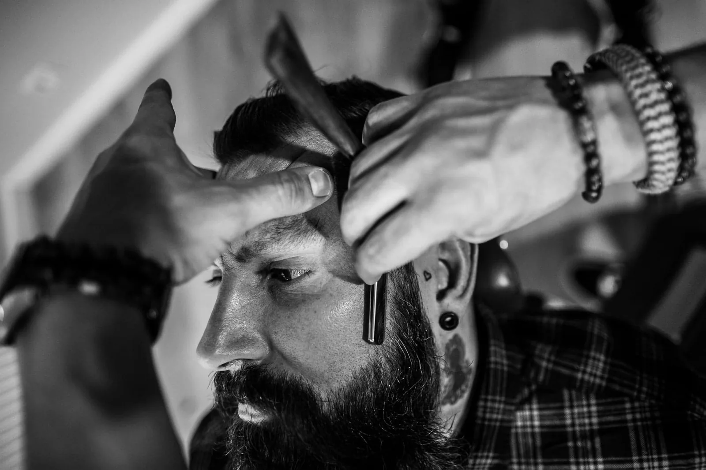
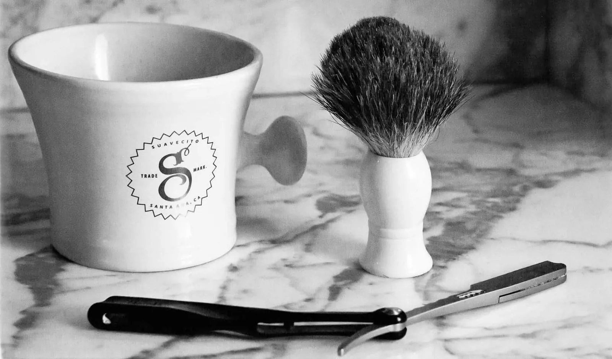
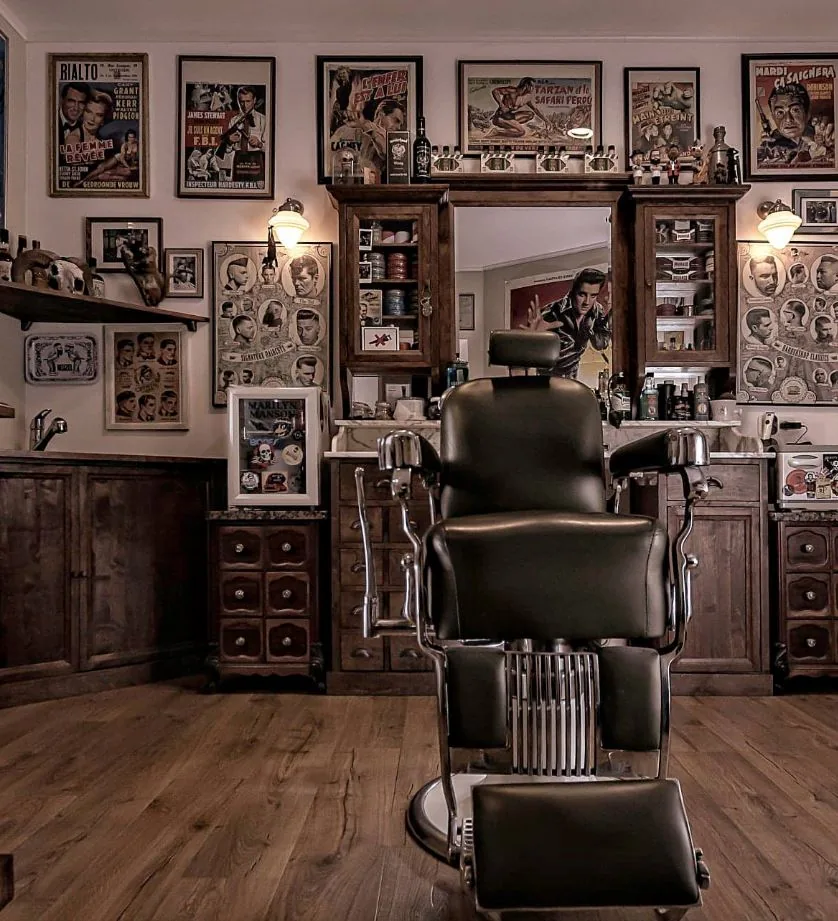
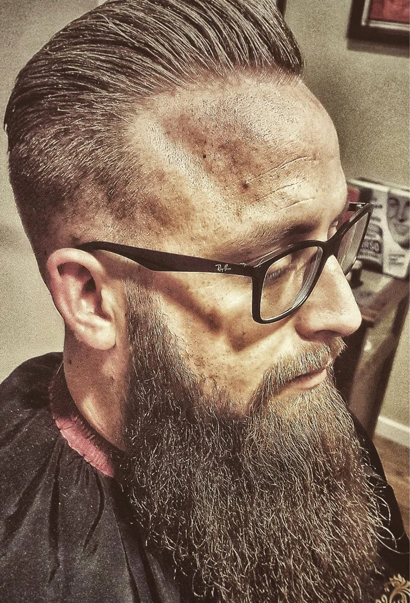
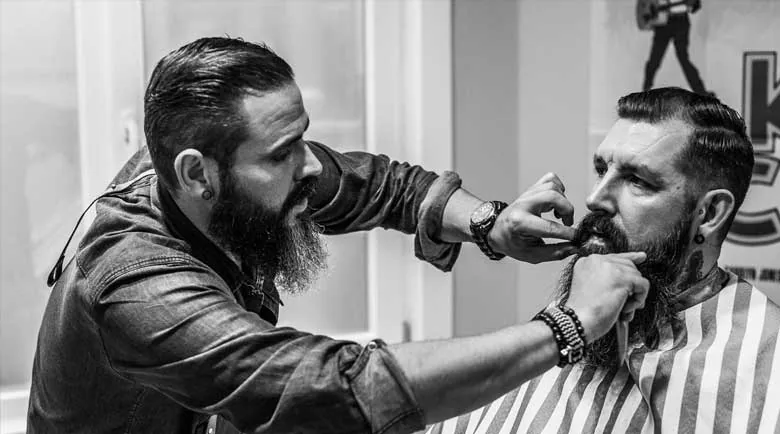
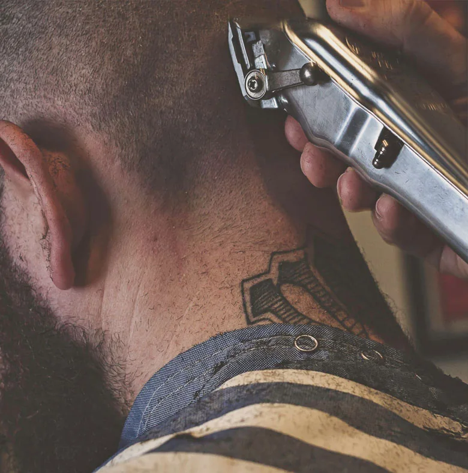

Aan de muur
Wat het kost.
Geen pakketten en geen kleine lettertjes. Je weet vooraf wat je betaalt.
Afspraken maak je telefonisch of via Facebook.
De klassieke scheerbeurt
Tijd voor het open mes.
Een scheerbeurt bij de barbier is iets anders dan thuis voor de spiegel. Je gaat achterover in de stoel en laat het werk aan iemand die het elke dag doet.
- 01
Warme doeken
De huid wordt zacht en de baard klaar voor het mes.
- 02
Zeep en kwast
Een dikke laag schuim, rustig opgebracht.
- 03
Het open mes
Strak langs de lijnen, tot alles glad is.

Ook voor wie
zijn hoofd kaal wil
De zaak
Posters tot aan het plafond.
Houten kasten, een oude kappersstoel en aan elke muur iets om naar te kijken. Het soort zaak waar je graag even blijft hangen na je snit.




Gemiddelde op Google
uit 92 reviews
Great to see you back in business. Thanks for the fab haircut and the musical vibes. See you next month.Joe, op Google
Excellent barber, friendly nice environment.Review op Google
5-star review for the best Barber in Town!!Review op Google
Langskomen
Stoel vrij? Even bellen.
Je vindt ons in Mariakerke, in de Aartshertogstraat. Bel of stuur een bericht op Facebook, dan zoeken we samen een moment.
Aartshertogstraat 1A8400 Oostende · Mariakerke
Openingsuren
- Maandag
- gesloten
- Dinsdag
- 8.00 tot 18.30
- Woensdag
- 8.00 tot 14.00
- Donderdag
- 8.00 tot 18.30
- Vrijdag
- 8.00 tot 20.00
- Zaterdag
- 9.00 tot 17.00
- Zondag
- gesloten
Baard- en haarproducten om thuis mee verder te gaan, vind je in de zaak en in onze webshop.